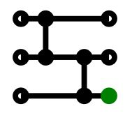
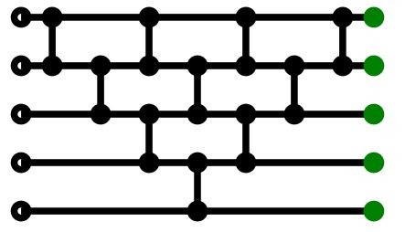
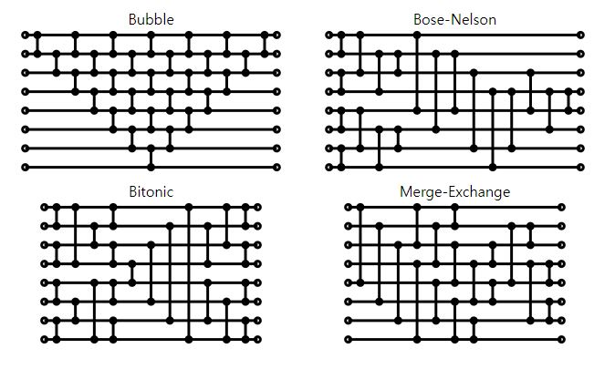

1. Introduction of Fast Median Filter by using Sorting Network
Conventional Median Filter is very easy to be implemented by using standard sorting algorithms. However, it's hard to optimize the algorithm by using a parallel processing mechanism.
With sorting network consisting of basic comparing and swap operations, a parallel processing (SIMD, GPGPU) can be applied efficently.
Example of array size 3, comparing and swapping sequentially to move the smallest element to the bottom.

Example of array size 5
And there are some varied optimal versions.
2. Experiment
3. References
- https://hoytech.github.io/sorting-networks/